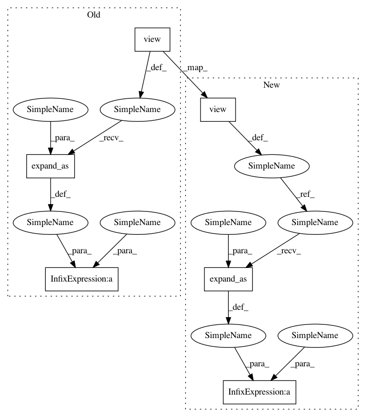

45b82c02b045f6dd836cab34174b0e4d07fa1e10,onmt/modules/WeightNorm.py,WN_ConvTranspose2d,forward,#WN_ConvTranspose2d#,174
Before Change
torch.sqrt(v_init + 1e-10) // out_features
self.g.data.copy_(scale_init)
self.b.data.copy_(-m_init * scale_init)
x_init = scale_init.view(1, self.out_channels, *([1] * (len(x_init.size()) - 2))).expand_as(x_init)\
* (x_init - m_init.view(1, self.out_channels, *([1] * (len(x_init.size()) - 2))).expand_as(x_init))
self.V_avg.copy_(self.V.data)
self.g_avg.copy_(self.g.data)
self.b_avg.copy_(self.b.data)
return Variable(x_init)
After Change
torch.sqrt(v_init + 1e-10) // out_features
self.g.data.copy_(scale_init)
self.b.data.copy_(-m_init * scale_init)
scale_init_shape = scale_init.view(
1, self.out_channels, *([1] * (len(x_init.size()) - 2)))
m_init_shape = m_init.view(
1, self.out_channels, *([1] * (len(x_init.size()) - 2)))
x_init = scale_init_shape.expand_as(x_init)\
* (x_init - m_init_shape.expand_as(x_init))
self.V_avg.copy_(self.V.data)
self.g_avg.copy_(self.g.data)
self.b_avg.copy_(self.b.data)
return Variable(x_init)
In pattern: SUPERPATTERN
Frequency: 4
Non-data size: 6
Instances
Project Name: OpenNMT/OpenNMT-py
Commit Name: 45b82c02b045f6dd836cab34174b0e4d07fa1e10
Time: 2017-09-05
Author: wjbianjason@163.com
File Name: onmt/modules/WeightNorm.py
Class Name: WN_ConvTranspose2d
Method Name: forward
Project Name: OpenNMT/OpenNMT-py
Commit Name: 45b82c02b045f6dd836cab34174b0e4d07fa1e10
Time: 2017-09-05
Author: wjbianjason@163.com
File Name: onmt/modules/WeightNorm.py
Class Name: WN_ConvTranspose2d
Method Name: forward
Project Name: OpenNMT/OpenNMT-py
Commit Name: 45b82c02b045f6dd836cab34174b0e4d07fa1e10
Time: 2017-09-05
Author: wjbianjason@163.com
File Name: onmt/modules/WeightNorm.py
Class Name: WN_Conv2d
Method Name: forward